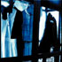
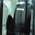
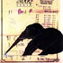
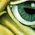
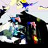
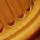

| Pic // | Name // | In Brief // |
|
| piano | ..based on a song I wrote with a piano playing friend of mine called Chasing Nightmares. |
|

| Elysium - film still 1 | Sarah-Mace works mainly in the areas of performance, installation and new media. |
|

| Elysium - film still 2 | Sarah-Mace works mainly in the areas of performance, installation and new media. |
|

| The Ermine's Tea Party - One Weekend (page view) | The Ermine's Tea Party - One Weekend is the fourth book in a series of six books created by Gracia Haby and myself, 2001. This image is of one of the book's pages. |
|
| Jillboard | Took this pic of a billboard that was looking a bit worn and thought it was quite a nice composition. Especially with it's layers of text from previous signage I love that kind of thing, and I have taken some more shots of billboards and street signage which is past it's used by date. |
|

| Dreamday | This is a detail from a small acrylic painting on canvas called "Dreamday" |
|
| gerbera | ...the back view of a gerbera |
|
| tomato | ...an image of a red tomato on a red background. |
|

| Same | this one's got a great hello kitty rainbow at the top centre. i was trying to get something close to the cityscape in the opening frame to Fritz Lang's 'Metropolis.' |

| Akira | colours courtesy of Otomo Katsuhiro's anime. |
|
| naturalight two | I awoke each morning to a room filled with natural light... |
|
| bus series #2 | //To capture the external reality of the bus, looking at the outside world through the blotted windowpane. |
|
| flight | f l i g h t |
|

| Column | The NSW art gallery, as with many other older buildings in the city of Sydney, offers a wealth of interesting material to photograph - especially at night. |
|
| Blanket and Chair | I like filling the frame of my shots with the subject. Trying to capture the form of a subject, perhaps stumbling across repeating patterns in natural and man-made objects or making the normal appear different. The shapes and shadow play that caught my eye here demanded that I stop whatever it was that I was doing and make sure I tried to cature the image that caught my eye and put it onto film. |